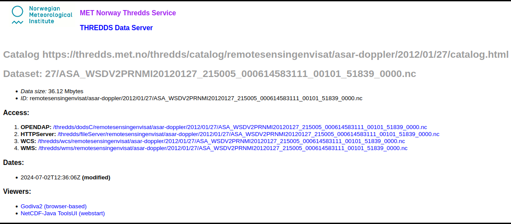
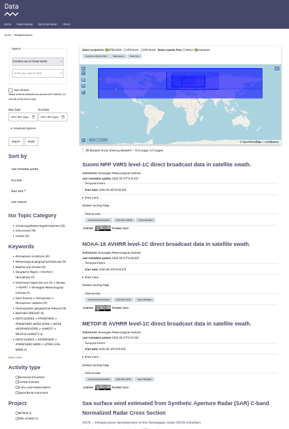

SAR Dataset Accessibility#
Work in progress notebook#
There are several ways to find and access the SAR datasets. These are the datasets which contain the calibrated geophysical range Doppler frequency shift retrievals from the ENVISAT ASAR wide-swath acqusitions obtained between 2002 and 2012. In the following a description of some selected methods for finding and extracting these datasets are presented.
Find Data Through Web Search#
All data is freely available and can be found in the MET Norway thredds catalog: https://thredds.met.no/thredds/catalog.html

The ENVISAT ASAR datasets are located at: https://thredds.met.no/thredds/catalog/remotesensingenvisat/asar-doppler/catalog.html
Or just following this folder structure: Observations/Remotesensing_archive/ENVISAT_ASAR_Doppler:

Entering the subfolder, the separate netCDF-files are found under separate pathways dependent on their respective dates. Wanting to access the files for a specific date the following structure is followed: YEAR/MONTH/DAY
Underneath the path to 2012/01/27 is shown:


The entire list of files from the specified date are then accessible (the list goes on).
Access Data#
Upon accessing a specific netCDF-file four different “Access”-options are available. These are “OPENDAP”, “HTTPServer”, “WCS” and “WMS”.

The separate options are explained in the following. In these examples the netCDF file “ASA_WSDV2PRNMI20120127_215005_000614583111_00101_51839_0000.nc” (the uppermost file under 2012/01/27) is used as an example.
OPENDAP - Using xarray:#
The data is easily accessed through OPENDAP by the use of the xarray python package. Below is a an example on how to use xarray to open and investigate a desired dataset. This procedure makes it easy to inspect the Dimensions, Coordinates, Data Variables, Indexes and Attributes of the dataset in question.
# Import the required package: xarray
import xarray as xr
# Providing the OPENDAP-url
OPENDAP_url = 'https://thredds.met.no/thredds/dodsC/remotesensingenvisat/asar-doppler/2012/01/27/ASA_WSDV2PRNMI20120127_215005_000612433111_00101_51839_0000.nc'
# Using xarray to open the dataset using the OPENDAP-url
ds = xr.open_dataset(OPENDAP_url)
# Investigating the data as an xarray.Dataset
ds
<xarray.Dataset> Size: 45MB
Dimensions: (y: 602, x: 851)
Dimensions without coordinates: y, x
Data variables: (12/22)
sensor_view_angle (y, x) float32 2MB ...
sigma0 (y, x) float32 2MB ...
subswaths (y, x) float32 2MB ...
incidence_angle (y, x) float32 2MB ...
sensor_azimuth (y, x) float32 2MB ...
dc (y, x) float32 2MB ...
... ...
wind_speed (y, x) float32 2MB ...
fdg (y, x) float32 2MB ...
u_range (y, x) float32 2MB ...
std_u_range (y, x) float32 2MB ...
longitude (y, x) float32 2MB ...
latitude (y, x) float32 2MB ...
Attributes: (12/75)
GDAL: GDAL 3.2.1, released 2020/12/29
acknowledgement: GSAR IDL pre-processing software was develope...
azimuth_start_time: 2012-01-27T21:50:05.173597
contributor_email: jeong-won.park@kopri.re.kr, hjoh@norceresearc...
contributor_institution: Korea Polar Research Institute (KOPRI), NORCE...
contributor_name: Jeong-Won Park, Harald Johnsen, Geir Engen
... ...
ysamplefreq_slc: 1711.9144385026736
ysize: 629
ytime: 2012-01-27T21:50:05.173597Z
ytime_slc: 2012-01-27T21:50:04.077748
summary_no: Kalibrert geofysisk Dopplerskift fra ENVISAT ...
title_no: Kalibrert geofysisk ENVISAT ASAR Dopplerskift...Find Data Through CSW (Catalog Service on the Web)#
Having problems finding the datasets using CSW. I am able to find the datasets used as examples here metno/esa-coscaw-data-search, but not the Envisat ASAR data we want for this manual… (just at staging site for now I assume…) - Note for self - See csw_test.ipynb for code example!
Get Parent Datasets and their Children (or Dataset Series in ISO 19115) with OGC CSW#
MET Norway organises datasets in parent-child relationships. A parent can be a given model simulation like Arome-Arctic deterministic, where the link provides the OGC CSW result of a search for “deterministic”.
The same search but with results provided in ISO format: https://data.csw.met.no/csw?SERVICE=CSW&VERSION=2.0.2&REQUEST=GetRecords&RESULTTYPE=results&TYPENAMES=csw:Record&ElementSetName=full&q=deterministic&outputschema=http://www.isotc211.org/2005/gmd.
Here, a field gmd:parentIdentifier provides the metadata identification of the parent dataset, i.e., no.met:806070da-e9f3-4d03-ba1d-26b843961634.
Get the parent dataset:
https://data.csw.met.no/csw?service=CSW&version=2.0.2&request=GetRepositoryItem&id=no.met:806070da-e9f3-4d03-ba1d-26b843961634.
Get all its children:
https://data.csw.met.no/csw?SERVICE=CSW&VERSION=2.0.2&REQUEST=GetRecords&RESULTTYPE=results&TYPENAMES=csw:Record&ElementSetName=full&outputFormat=application%2Fxml&outputschema=http://www.isotc211.org/2005/gmd&CONSTRAINTLANGUAGE=CQL_TEXT&CONSTRAINT=apiso:ParentIdentifier%20like%20%27no.met:806070da-e9f3-4d03-ba1d-26b843961634%27.
To find all parent datasets:
https://csw.s-enda-staging.k8s.met.no/csw?SERVICE=CSW&VERSION=2.0.2&REQUEST=GetRecords&RESULTTYPE=results&TYPENAMES=csw:Record&ElementSetName=full&outputschema=http://www.isotc211.org/2005/gmd&CONSTRAINTLANGUAGE=CQL_TEXT&CONSTRAINT=dc:type%20like%20%27series%27.
Find Data with OpenSearch#
OpenSearch is a way for websites and search engines to publish search results in a standard and accessible format.
To find all datasets in the catalogue:
https://data.csw.met.no/?mode=opensearch&service=CSW&version=2.0.2&request=GetRecords&elementsetname=full&typenames=csw:Record&resulttype=results
Or datasets within a given time span:
http://data.csw.met.no/?mode=opensearch&service=CSW&version=2.0.2&request=GetRecords&elementsetname=full&typenames=csw:Record&resulttype=results&time=2000-01-01/2020-09-01
Or datasets within a geographical domain (defined as a box with parameters min_longitude, min_latitude, max_longitude, max_latitude):
https://data.csw.met.no/?mode=opensearch&service=CSW&version=2.0.2&request=GetRecords&elementsetname=full&typenames=csw:Record&resulttype=results&bbox=0,40,10,60
Or, datasets with “arome-arctic 2.5Km deterministic” in the title:
https://data.csw.met.no/?mode=opensearch&service=CSW&version=2.0.2&request=GetRecords&elementsetname=full&typenames=csw:Record&resulttype=results&q=arome-arctic\\%202.5Km\\%20deterministic
More Advanced Geographical Search with OGC CSW#
PyCSW opensearch only supports geographical searches querying for a box. For more advanced geographical searches, one must write specific XML files. For example:
To find all datasets containing a point (my_xml_request_containing_a_point.xml):
<?xml version="1.0" encoding="ISO-8859-1" standalone="no"?>
<csw:GetRecords
xmlns:csw="http://www.opengis.net/cat/csw/2.0.2"
xmlns:ogc="http://www.opengis.net/ogc"
xmlns:gml="http://www.opengis.net/gml"
xmlns:xsi="http://www.w3.org/2001/XMLSchema-instance"
service="CSW"
version="2.0.2"
resultType="results"
maxRecords="10"
outputFormat="application/xml"
outputSchema="http://www.opengis.net/cat/csw/2.0.2"
xsi:schemaLocation="http://www.opengis.net/cat/csw/2.0.2 http://schemas.opengis.net/csw/2.0.2/CSW-discovery.xsd" >
<csw:Query typeNames="csw:Record">
<csw:ElementSetName>full</csw:ElementSetName>
<csw:Constraint version="1.1.0">
<ogc:Filter>
<ogc:Contains>
<ogc:PropertyName>ows:BoundingBox</ogc:PropertyName>
<gml:Point>
<gml:pos srsDimension="2">59.0 4.0</gml:pos>
</gml:Point>
</ogc:Contains>
</ogc:Filter>
</csw:Constraint>
</csw:Query>
</csw:GetRecords>
To find all datasets intersecting a polygon (my_xml_request_intersecting_a_polygon.xml):
<?xml version="1.0" encoding="ISO-8859-1" standalone="no"?>
<csw:GetRecords
xmlns:csw="http://www.opengis.net/cat/csw/2.0.2"
xmlns:gml="http://www.opengis.net/gml"
xmlns:ogc="http://www.opengis.net/ogc"
xmlns:xsi="http://www.w3.org/2001/XMLSchema-instance"
service="CSW"
version="2.0.2"
resultType="results"
maxRecords="10"
outputFormat="application/xml"
outputSchema="http://www.opengis.net/cat/csw/2.0.2"
xsi:schemaLocation="http://www.opengis.net/cat/csw/2.0.2 http://schemas.opengis.net/csw/2.0.2/CSW-discovery.xsd" >
<csw:Query typeNames="csw:Record">
<csw:ElementSetName>full</csw:ElementSetName>
<csw:Constraint version="1.1.0">
<ogc:Filter>
<ogc:Intersects>
<ogc:PropertyName>ows:BoundingBox</ogc:PropertyName>
<gml:Polygon>
<gml:exterior>
<gml:LinearRing>
<gml:posList>
47.00 -5.00 55.00 -5.00 55.00 20.00 47.00 20.00 47.00 -5.00
</gml:posList>
</gml:LinearRing>
</gml:exterior>
</gml:Polygon>
</ogc:Intersects>
</ogc:Filter>
</csw:Constraint>
</csw:Query>
</csw:GetRecords>
To find all datasets intersecting a polygon within a given time span (my_xml_request_intersecting_a_polygon_within_a_given_time_span.xml):
<?xml version="1.0" encoding="ISO-8859-1" standalone="no"?>
<csw:GetRecords
xmlns:csw="http://www.opengis.net/cat/csw/2.0.2"
xmlns:gml="http://www.opengis.net/gml"
xmlns:ogc="http://www.opengis.net/ogc"
xmlns:xsi="http://www.w3.org/2001/XMLSchema-instance"
service="CSW"
version="2.0.2"
resultType="results"
maxRecords="100"
outputFormat="application/xml"
outputSchema="http://www.opengis.net/cat/csw/2.0.2"
xsi:schemaLocation="http://www.opengis.net/cat/csw/2.0.2 http://schemas.opengis.net/csw/2.0.2/CSW-discovery.xsd" >
<csw:Query typeNames="csw:Record">
<csw:ElementSetName>summary</csw:ElementSetName>
<csw:Constraint version="1.1.0">
<ogc:Filter>
<ogc:And>
<ogc:Intersects>
<ogc:PropertyName>ows:BoundingBox</ogc:PropertyName>
<gml:Polygon>
<gml:exterior>
<gml:LinearRing>
<gml:posList>
63.3984 7.65173 60.7546 5.0449 59.0639 10.187 62.9065 12.4944 63.3984 7.65173
</gml:posList>
</gml:LinearRing>
</gml:exterior>
</gml:Polygon>
</ogc:Intersects>
<ogc:PropertyIsGreaterThanOrEqualTo>
<ogc:PropertyName>apiso:TempExtent_begin</ogc:PropertyName>
<ogc:Literal>2022-03-01 00:00</ogc:Literal>
</ogc:PropertyIsGreaterThanOrEqualTo>
<ogc:PropertyIsLessThanOrEqualTo>
<ogc:PropertyName>apiso:TempExtent_end</ogc:PropertyName>
<ogc:Literal>2023-03-08 00:00</ogc:Literal>
</ogc:PropertyIsLessThanOrEqualTo>
</ogc:And>
</ogc:Filter>
</csw:Constraint>
</csw:Query>
</csw:GetRecords>
Then, you can query the CSW endpoint and print the response text using, e.g., python:
import requests
import xarray as xr
import re
import sys
# Define the headers
headers = {'Content-Type': 'application/xml'}
# Specify the xml-file that should be used for the search
# my_xml_request = 'my_xml_request_containing_a_point.xml'
my_xml_request = 'my_xml_request_intersecting_a_polygon.xml'
# my_xml_request = 'my_xml_request_intersecting_a_polygon_within_a_given_time_span.xml'
# Open and read the XML file
with open(my_xml_request, 'r') as file:
xml_data = file.read()
# Send the POST request
response = requests.post('https://data.csw.met.no', data=xml_data, headers=headers)
# The response text
print(response.text)
# Extract the OPENDAP urls
# The pattern 'https.*?\.nc(?:ml)?' is "https://thredds.met.no/thredds/dodsC/{regardless_of_what_is_in_between}.ncml"
# where the "ml" ending is inculded only if found.
my_pattern= r'https://thredds.met.no/thredds/dodsC/.*?\.nc(?:ml)?'
# findall() function returns all non-overlapping matches of my_pattern in string, as a list of strings
opendap_urls = re.findall(my_pattern, response.text)
# List of OPENDAP urls
print(f'List contains {len(opendap_urls)} urls:')
print(opendap_urls)
# Check if there are any files - Statement if not
if len(opendap_urls) > 0:
# Open the first dataset in the list of urls
ds = xr.open_dataset(opendap_urls[0])
else:
ds = "No file(s) match the search criterias."
ds
<?xml version="1.0" encoding="UTF-8" standalone="no"?>
<!-- pycsw 2.7.dev0 -->
<csw:GetRecordsResponse xmlns:csw="http://www.opengis.net/cat/csw/2.0.2" xmlns:dc="http://purl.org/dc/elements/1.1/" xmlns:dct="http://purl.org/dc/terms/" xmlns:gmd="http://www.isotc211.org/2005/gmd" xmlns:gml="http://www.opengis.net/gml" xmlns:ows="http://www.opengis.net/ows" xmlns:xs="http://www.w3.org/2001/XMLSchema" xmlns:xsi="http://www.w3.org/2001/XMLSchema-instance" version="2.0.2" xsi:schemaLocation="http://www.opengis.net/cat/csw/2.0.2 http://schemas.opengis.net/csw/2.0.2/CSW-discovery.xsd"><csw:SearchStatus timestamp="2024-09-27T10:01:38Z"/><csw:SearchResults numberOfRecordsMatched="204253" numberOfRecordsReturned="10" nextRecord="11" recordSchema="http://www.opengis.net/cat/csw/2.0.2" elementSet="full"><csw:Record><dc:identifier>no.met:6ad20c69-4681-4cfd-a833-f8df0a290f1a</dc:identifier><dc:title>Meps 2.5 km surface parameters from ensemble member 8 2024-08-20T05:00:00Z + 66 hours</dc:title><dc:type>dataset</dc:type><dc:subject>WEATHER FORECAST</dc:subject><dc:subject>Meteorological geographical features</dc:subject><dc:subject>Atmospheric conditions</dc:subject><dc:subject>Weather and climate</dc:subject><dc:subject scheme="http://www.isotc211.org/2005/resources/Codelist/gmxCodelists.xml#MD_TopicCategoryCode">climatologyMeteorologyAtmosphere</dc:subject><dc:format>NetCDF-CF</dc:format><dct:references scheme="OPENDAP:OPENDAP">https://thredds.met.no/thredds/dodsC/meps25epsarchive/2024/08/20/05/meps_mbr008_sfc_20240820T05Z.ncml</dct:references><dct:references scheme="OGC:WMS">https://fastapi.s-enda.k8s.met.no/api/get_quicklook/2024/08/20/05/meps_mbr008_sfc_20240820T05Z.ncml?service=WMS&version=1.3.0&request=GetCapabilities</dct:references><dct:references scheme="WWW:DOWNLOAD-1.0-http--download">https://thredds.met.no/thredds/fileServer/meps25epsarchive/2024/08/20/05/meps_mbr008_sfc_20240820T05Z.ncml</dct:references><dct:modified>2024-08-20</dct:modified><dct:abstract>This file contains surface parameters from ensemble member 8. For more information, please visit https://github.com/metno/NWPdocs/wiki</dct:abstract><dc:date>2024-08-20</dc:date><dc:rights>otherRestrictions</dc:rights><dct:spatial scheme="http://www.opengis.net/def/crs">EPSG:4326</dct:spatial><ows:BoundingBox crs="urn:x-ogc:def:crs:EPSG:6.11:4326" dimensions="2"><ows:LowerCorner>49.8 -18.1</ows:LowerCorner><ows:UpperCorner>75.2 54.2</ows:UpperCorner></ows:BoundingBox></csw:Record><csw:Record><dc:identifier>no.met:6d92ab09-83f9-4922-8659-88eda92be9ac</dc:identifier><dc:title>Meps 2.5 km pressure level parameters from ensemble member 3 2024-08-11T10:00:00Z + 66 hours</dc:title><dc:type>dataset</dc:type><dc:subject>WEATHER FORECAST</dc:subject><dc:subject>Meteorological geographical features</dc:subject><dc:subject>Atmospheric conditions</dc:subject><dc:subject>Weather and climate</dc:subject><dc:subject scheme="http://www.isotc211.org/2005/resources/Codelist/gmxCodelists.xml#MD_TopicCategoryCode">climatologyMeteorologyAtmosphere</dc:subject><dc:format>NetCDF-CF</dc:format><dct:references scheme="OPENDAP:OPENDAP">https://thredds.met.no/thredds/dodsC/meps25epsarchive/2024/08/11/10/meps_mbr003_pl_20240811T10Z.ncml</dct:references><dct:references scheme="OGC:WMS">https://fastapi.s-enda.k8s.met.no/api/get_quicklook/2024/08/11/10/meps_mbr003_pl_20240811T10Z.ncml?service=WMS&version=1.3.0&request=GetCapabilities</dct:references><dct:references scheme="WWW:DOWNLOAD-1.0-http--download">https://thredds.met.no/thredds/fileServer/meps25epsarchive/2024/08/11/10/meps_mbr003_pl_20240811T10Z.ncml</dct:references><dct:modified>2024-08-11</dct:modified><dct:abstract>This file contains pressure level parameters from ensemble member 3. For more information, please visit https://github.com/metno/NWPdocs/wiki</dct:abstract><dc:date>2024-08-11</dc:date><dc:rights>otherRestrictions</dc:rights><dct:spatial scheme="http://www.opengis.net/def/crs">EPSG:4326</dct:spatial><ows:BoundingBox crs="urn:x-ogc:def:crs:EPSG:6.11:4326" dimensions="2"><ows:LowerCorner>49.8 -18.1</ows:LowerCorner><ows:UpperCorner>75.2 54.2</ows:UpperCorner></ows:BoundingBox></csw:Record><csw:Record><dc:identifier>no.met:5a4af209-5a61-455b-ac2c-6cbdc0d56a12</dc:identifier><dc:title>Meps 2.5 km pressure level parameters from ensemble member 9 2024-08-05T03:00:00Z + 66 hours</dc:title><dc:type>dataset</dc:type><dc:subject>WEATHER FORECAST</dc:subject><dc:subject>Meteorological geographical features</dc:subject><dc:subject>Atmospheric conditions</dc:subject><dc:subject>Weather and climate</dc:subject><dc:subject scheme="http://www.isotc211.org/2005/resources/Codelist/gmxCodelists.xml#MD_TopicCategoryCode">climatologyMeteorologyAtmosphere</dc:subject><dc:format>NetCDF-CF</dc:format><dct:references scheme="OPENDAP:OPENDAP">https://thredds.met.no/thredds/dodsC/meps25epsarchive/2024/08/05/03/meps_mbr009_pl_20240805T03Z.ncml</dct:references><dct:references scheme="OGC:WMS">https://fastapi.s-enda.k8s.met.no/api/get_quicklook/2024/08/05/03/meps_mbr009_pl_20240805T03Z.ncml?service=WMS&version=1.3.0&request=GetCapabilities</dct:references><dct:references scheme="WWW:DOWNLOAD-1.0-http--download">https://thredds.met.no/thredds/fileServer/meps25epsarchive/2024/08/05/03/meps_mbr009_pl_20240805T03Z.ncml</dct:references><dct:modified>2024-08-05</dct:modified><dct:abstract>This file contains pressure level parameters from ensemble member 9. For more information, please visit https://github.com/metno/NWPdocs/wiki</dct:abstract><dc:date>2024-08-05</dc:date><dc:rights>otherRestrictions</dc:rights><dct:spatial scheme="http://www.opengis.net/def/crs">EPSG:4326</dct:spatial><ows:BoundingBox crs="urn:x-ogc:def:crs:EPSG:6.11:4326" dimensions="2"><ows:LowerCorner>49.8 -18.1</ows:LowerCorner><ows:UpperCorner>75.2 54.2</ows:UpperCorner></ows:BoundingBox></csw:Record><csw:Record><dc:identifier>no.met:635cd909-15bc-4327-8592-8ccf24437bea</dc:identifier><dc:title>Meps 2.5 km pressure level parameters from ensemble member 14 2024-03-15T14:00:00Z + 66 hours</dc:title><dc:type>dataset</dc:type><dc:subject>WEATHER FORECAST</dc:subject><dc:subject>Meteorological geographical features</dc:subject><dc:subject>Atmospheric conditions</dc:subject><dc:subject>Weather and climate</dc:subject><dc:subject scheme="http://www.isotc211.org/2005/resources/Codelist/gmxCodelists.xml#MD_TopicCategoryCode">climatologyMeteorologyAtmosphere</dc:subject><dc:format>NetCDF-CF</dc:format><dct:references scheme="OPENDAP:OPENDAP">https://thredds.met.no/thredds/dodsC/meps25epsarchive/2024/03/15/14/meps_mbr014_pl_20240315T14Z.ncml</dct:references><dct:references scheme="OGC:WMS">https://fastapi.s-enda.k8s.met.no/api/get_quicklook/2024/03/15/14/meps_mbr014_pl_20240315T14Z.ncml?service=WMS&version=1.3.0&request=GetCapabilities</dct:references><dct:references scheme="WWW:DOWNLOAD-1.0-http--download">https://thredds.met.no/thredds/fileServer/meps25epsarchive/2024/03/15/14/meps_mbr014_pl_20240315T14Z.ncml</dct:references><dct:modified>2024-03-15</dct:modified><dct:abstract>This file contains pressure level parameters from ensemble member 14. For more information, please visit https://github.com/metno/NWPdocs/wiki</dct:abstract><dc:date>2024-03-15</dc:date><dc:rights>otherRestrictions</dc:rights><dct:spatial scheme="http://www.opengis.net/def/crs">EPSG:4326</dct:spatial><ows:BoundingBox crs="urn:x-ogc:def:crs:EPSG:6.11:4326" dimensions="2"><ows:LowerCorner>49.8 -18.1</ows:LowerCorner><ows:UpperCorner>75.2 54.2</ows:UpperCorner></ows:BoundingBox></csw:Record><csw:Record><dc:identifier>no.met:df0c6fa9-655c-4129-a191-26cedbe14e74</dc:identifier><dc:title>Meps 2.5 km deterministic height level parameters 2024-04-07T00:00:00Z + 66 hours</dc:title><dc:type>dataset</dc:type><dc:subject>WEATHER FORECAST</dc:subject><dc:subject>Meteorological geographical features</dc:subject><dc:subject>Atmospheric conditions</dc:subject><dc:subject>Weather and climate</dc:subject><dc:subject scheme="http://www.isotc211.org/2005/resources/Codelist/gmxCodelists.xml#MD_TopicCategoryCode">climatologyMeteorologyAtmosphere</dc:subject><dc:format>NetCDF-CF</dc:format><dct:references scheme="OPENDAP:OPENDAP">https://thredds.met.no/thredds/dodsC/meps25epsarchive/2024/04/07/00/meps_mbr000_hl_20240407T00Z.ncml</dct:references><dct:references scheme="OGC:WMS">https://fastapi.s-enda.k8s.met.no/api/get_quicklook/2024/04/07/00/meps_mbr000_hl_20240407T00Z.ncml?service=WMS&version=1.3.0&request=GetCapabilities</dct:references><dct:references scheme="WWW:DOWNLOAD-1.0-http--download">https://thredds.met.no/thredds/fileServer/meps25epsarchive/2024/04/07/00/meps_mbr000_hl_20240407T00Z.ncml</dct:references><dct:modified>2024-04-07</dct:modified><dct:abstract>This file contains height level parameters from control member. For more information, please visit https://github.com/metno/NWPdocs/wiki</dct:abstract><dc:date>2024-04-07</dc:date><dc:rights>otherRestrictions</dc:rights><dct:spatial scheme="http://www.opengis.net/def/crs">EPSG:4326</dct:spatial><ows:BoundingBox crs="urn:x-ogc:def:crs:EPSG:6.11:4326" dimensions="2"><ows:LowerCorner>49.8 -18.1</ows:LowerCorner><ows:UpperCorner>75.2 54.2</ows:UpperCorner></ows:BoundingBox></csw:Record><csw:Record><dc:identifier>no.met:d0aa53a9-a40f-40cc-a2fd-d35748674cff</dc:identifier><dc:title>Meps 2.5 km pressure level parameters from ensemble member 4 2024-07-04T19:00:00Z + 66 hours</dc:title><dc:type>dataset</dc:type><dc:subject>WEATHER FORECAST</dc:subject><dc:subject>Meteorological geographical features</dc:subject><dc:subject>Atmospheric conditions</dc:subject><dc:subject>Weather and climate</dc:subject><dc:subject scheme="http://www.isotc211.org/2005/resources/Codelist/gmxCodelists.xml#MD_TopicCategoryCode">climatologyMeteorologyAtmosphere</dc:subject><dc:format>NetCDF-CF</dc:format><dct:references scheme="OPENDAP:OPENDAP">https://thredds.met.no/thredds/dodsC/meps25epsarchive/2024/07/04/19/meps_mbr004_pl_20240704T19Z.ncml</dct:references><dct:references scheme="OGC:WMS">https://fastapi.s-enda.k8s.met.no/api/get_quicklook/2024/07/04/19/meps_mbr004_pl_20240704T19Z.ncml?service=WMS&version=1.3.0&request=GetCapabilities</dct:references><dct:references scheme="WWW:DOWNLOAD-1.0-http--download">https://thredds.met.no/thredds/fileServer/meps25epsarchive/2024/07/04/19/meps_mbr004_pl_20240704T19Z.ncml</dct:references><dct:modified>2024-07-04</dct:modified><dct:abstract>This file contains pressure level parameters from ensemble member 4. For more information, please visit https://github.com/metno/NWPdocs/wiki</dct:abstract><dc:date>2024-07-04</dc:date><dc:rights>otherRestrictions</dc:rights><dct:spatial scheme="http://www.opengis.net/def/crs">EPSG:4326</dct:spatial><ows:BoundingBox crs="urn:x-ogc:def:crs:EPSG:6.11:4326" dimensions="2"><ows:LowerCorner>49.8 -18.1</ows:LowerCorner><ows:UpperCorner>75.2 54.2</ows:UpperCorner></ows:BoundingBox></csw:Record><csw:Record><dc:identifier>no.met:c81571a9-5cb2-4410-a50e-c78504eb9515</dc:identifier><dc:title>Meps 2.5 km deterministic model level parameters 2024-08-31T15:00:00Z + 66 hours</dc:title><dc:type>dataset</dc:type><dc:subject>WEATHER FORECAST</dc:subject><dc:subject>Meteorological geographical features</dc:subject><dc:subject>Atmospheric conditions</dc:subject><dc:subject>Weather and climate</dc:subject><dc:subject scheme="http://www.isotc211.org/2005/resources/Codelist/gmxCodelists.xml#MD_TopicCategoryCode">climatologyMeteorologyAtmosphere</dc:subject><dc:format>NetCDF-CF</dc:format><dct:references scheme="OPENDAP:OPENDAP">https://thredds.met.no/thredds/dodsC/meps25epsarchive/2024/08/31/15/meps_mbr000_ml_20240831T15Z.ncml</dct:references><dct:references scheme="OGC:WMS">https://fastapi.s-enda.k8s.met.no/api/get_quicklook/2024/08/31/15/meps_mbr000_ml_20240831T15Z.ncml?service=WMS&version=1.3.0&request=GetCapabilities</dct:references><dct:references scheme="WWW:DOWNLOAD-1.0-http--download">https://thredds.met.no/thredds/fileServer/meps25epsarchive/2024/08/31/15/meps_mbr000_ml_20240831T15Z.ncml</dct:references><dct:modified>2024-08-31</dct:modified><dct:abstract>This file contains model level parameters from control member. For more information, please visit https://github.com/metno/NWPdocs/wiki</dct:abstract><dc:date>2024-08-31</dc:date><dc:rights>otherRestrictions</dc:rights><dct:spatial scheme="http://www.opengis.net/def/crs">EPSG:4326</dct:spatial><ows:BoundingBox crs="urn:x-ogc:def:crs:EPSG:6.11:4326" dimensions="2"><ows:LowerCorner>49.8 -18.1</ows:LowerCorner><ows:UpperCorner>75.2 54.2</ows:UpperCorner></ows:BoundingBox></csw:Record><csw:Record><dc:identifier>no.met:32e930e9-4f22-422a-852b-e86e780aa93d</dc:identifier><dc:title>Meps 2.5 km pressure level parameters from ensemble member 14 2024-07-13T11:00:00Z + 66 hours</dc:title><dc:type>dataset</dc:type><dc:subject>WEATHER FORECAST</dc:subject><dc:subject>Meteorological geographical features</dc:subject><dc:subject>Atmospheric conditions</dc:subject><dc:subject>Weather and climate</dc:subject><dc:subject scheme="http://www.isotc211.org/2005/resources/Codelist/gmxCodelists.xml#MD_TopicCategoryCode">climatologyMeteorologyAtmosphere</dc:subject><dc:format>NetCDF-CF</dc:format><dct:references scheme="OPENDAP:OPENDAP">https://thredds.met.no/thredds/dodsC/meps25epsarchive/2024/07/13/11/meps_mbr014_pl_20240713T11Z.ncml</dct:references><dct:references scheme="OGC:WMS">https://fastapi.s-enda.k8s.met.no/api/get_quicklook/2024/07/13/11/meps_mbr014_pl_20240713T11Z.ncml?service=WMS&version=1.3.0&request=GetCapabilities</dct:references><dct:references scheme="WWW:DOWNLOAD-1.0-http--download">https://thredds.met.no/thredds/fileServer/meps25epsarchive/2024/07/13/11/meps_mbr014_pl_20240713T11Z.ncml</dct:references><dct:modified>2024-07-13</dct:modified><dct:abstract>This file contains pressure level parameters from ensemble member 14. For more information, please visit https://github.com/metno/NWPdocs/wiki</dct:abstract><dc:date>2024-07-13</dc:date><dc:rights>otherRestrictions</dc:rights><dct:spatial scheme="http://www.opengis.net/def/crs">EPSG:4326</dct:spatial><ows:BoundingBox crs="urn:x-ogc:def:crs:EPSG:6.11:4326" dimensions="2"><ows:LowerCorner>49.8 -18.1</ows:LowerCorner><ows:UpperCorner>75.2 54.2</ows:UpperCorner></ows:BoundingBox></csw:Record><csw:Record><dc:identifier>no.met:c998a0e9-bff1-45dd-8491-619cd772d4cc</dc:identifier><dc:title>Meps 2.5 km pressure level parameters from ensemble member 3 2024-05-18T01:00:00Z + 66 hours</dc:title><dc:type>dataset</dc:type><dc:subject>WEATHER FORECAST</dc:subject><dc:subject>Meteorological geographical features</dc:subject><dc:subject>Atmospheric conditions</dc:subject><dc:subject>Weather and climate</dc:subject><dc:subject scheme="http://www.isotc211.org/2005/resources/Codelist/gmxCodelists.xml#MD_TopicCategoryCode">climatologyMeteorologyAtmosphere</dc:subject><dc:format>NetCDF-CF</dc:format><dct:references scheme="OPENDAP:OPENDAP">https://thredds.met.no/thredds/dodsC/meps25epsarchive/2024/05/18/01/meps_mbr003_pl_20240518T01Z.ncml</dct:references><dct:references scheme="OGC:WMS">https://fastapi.s-enda.k8s.met.no/api/get_quicklook/2024/05/18/01/meps_mbr003_pl_20240518T01Z.ncml?service=WMS&version=1.3.0&request=GetCapabilities</dct:references><dct:references scheme="WWW:DOWNLOAD-1.0-http--download">https://thredds.met.no/thredds/fileServer/meps25epsarchive/2024/05/18/01/meps_mbr003_pl_20240518T01Z.ncml</dct:references><dct:modified>2024-05-18</dct:modified><dct:abstract>This file contains pressure level parameters from ensemble member 3. For more information, please visit https://github.com/metno/NWPdocs/wiki</dct:abstract><dc:date>2024-05-18</dc:date><dc:rights>otherRestrictions</dc:rights><dct:spatial scheme="http://www.opengis.net/def/crs">EPSG:4326</dct:spatial><ows:BoundingBox crs="urn:x-ogc:def:crs:EPSG:6.11:4326" dimensions="2"><ows:LowerCorner>49.8 -18.1</ows:LowerCorner><ows:UpperCorner>75.2 54.2</ows:UpperCorner></ows:BoundingBox></csw:Record><csw:Record><dc:identifier>no.met:58981ae9-f3b6-44ad-8b2d-6e12a8bd6cb6</dc:identifier><dc:title>Meps 2.5 km pressure level parameters from ensemble member 7 2024-08-23T22:00:00Z + 66 hours</dc:title><dc:type>dataset</dc:type><dc:subject>WEATHER FORECAST</dc:subject><dc:subject>Meteorological geographical features</dc:subject><dc:subject>Atmospheric conditions</dc:subject><dc:subject>Weather and climate</dc:subject><dc:subject scheme="http://www.isotc211.org/2005/resources/Codelist/gmxCodelists.xml#MD_TopicCategoryCode">climatologyMeteorologyAtmosphere</dc:subject><dc:format>NetCDF-CF</dc:format><dct:references scheme="OPENDAP:OPENDAP">https://thredds.met.no/thredds/dodsC/meps25epsarchive/2024/08/23/22/meps_mbr007_pl_20240823T22Z.ncml</dct:references><dct:references scheme="OGC:WMS">https://fastapi.s-enda.k8s.met.no/api/get_quicklook/2024/08/23/22/meps_mbr007_pl_20240823T22Z.ncml?service=WMS&version=1.3.0&request=GetCapabilities</dct:references><dct:references scheme="WWW:DOWNLOAD-1.0-http--download">https://thredds.met.no/thredds/fileServer/meps25epsarchive/2024/08/23/22/meps_mbr007_pl_20240823T22Z.ncml</dct:references><dct:modified>2024-08-24</dct:modified><dct:abstract>This file contains pressure level parameters from ensemble member 7. For more information, please visit https://github.com/metno/NWPdocs/wiki</dct:abstract><dc:date>2024-08-24</dc:date><dc:rights>otherRestrictions</dc:rights><dct:spatial scheme="http://www.opengis.net/def/crs">EPSG:4326</dct:spatial><ows:BoundingBox crs="urn:x-ogc:def:crs:EPSG:6.11:4326" dimensions="2"><ows:LowerCorner>49.8 -18.1</ows:LowerCorner><ows:UpperCorner>75.2 54.2</ows:UpperCorner></ows:BoundingBox></csw:Record></csw:SearchResults></csw:GetRecordsResponse>
List contains 10 urls:
['https://thredds.met.no/thredds/dodsC/meps25epsarchive/2024/08/20/05/meps_mbr008_sfc_20240820T05Z.ncml', 'https://thredds.met.no/thredds/dodsC/meps25epsarchive/2024/08/11/10/meps_mbr003_pl_20240811T10Z.ncml', 'https://thredds.met.no/thredds/dodsC/meps25epsarchive/2024/08/05/03/meps_mbr009_pl_20240805T03Z.ncml', 'https://thredds.met.no/thredds/dodsC/meps25epsarchive/2024/03/15/14/meps_mbr014_pl_20240315T14Z.ncml', 'https://thredds.met.no/thredds/dodsC/meps25epsarchive/2024/04/07/00/meps_mbr000_hl_20240407T00Z.ncml', 'https://thredds.met.no/thredds/dodsC/meps25epsarchive/2024/07/04/19/meps_mbr004_pl_20240704T19Z.ncml', 'https://thredds.met.no/thredds/dodsC/meps25epsarchive/2024/08/31/15/meps_mbr000_ml_20240831T15Z.ncml', 'https://thredds.met.no/thredds/dodsC/meps25epsarchive/2024/07/13/11/meps_mbr014_pl_20240713T11Z.ncml', 'https://thredds.met.no/thredds/dodsC/meps25epsarchive/2024/05/18/01/meps_mbr003_pl_20240518T01Z.ncml', 'https://thredds.met.no/thredds/dodsC/meps25epsarchive/2024/08/23/22/meps_mbr007_pl_20240823T22Z.ncml']
<xarray.Dataset> Size: 11GB
Dimensions: (
mean_sea_level: 1,
surface: 1,
height_above_msl: 1,
height0: 1,
height1: 1,
height2: 1,
x: 949, y: 1069,
time: 67)
Coordinates:
* mean_sea_level (mean_sea_level) int16 2B ...
* surface (surface) int16 2B ...
* height_above_msl (height_above_msl) float32 4B ...
* height0 (height0) float32 4B ...
* height1 (height1) float32 4B ...
* height2 (height2) float32 4B ...
* x (x) float32 4kB ...
* y (y) float32 4kB ...
* time (time) datetime64[ns] 536B ...
longitude (y, x) float64 8MB ...
latitude (y, x) float64 8MB ...
Data variables: (12/41)
forecast_reference_time datetime64[ns] 8B ...
projection_lambert int32 4B ...
cloud_base_altitude (time, surface, y, x) float32 272MB ...
visibility_in_air (time, height0, y, x) float32 272MB ...
air_temperature_0m (time, height0, y, x) float32 272MB ...
surface_air_pressure (time, height0, y, x) float32 272MB ...
... ...
SFX_X001RSN_VEG1 (time, y, x) float32 272MB ...
SFX_X002RSN_VEG1 (time, y, x) float32 272MB ...
SFX_WSN_T_ISBA (time, y, x) float32 272MB ...
SFX_DSN_T_ISBA (time, y, x) float32 272MB ...
SFX_Z0 (time, y, x) float32 272MB ...
SFX_Z0H (time, y, x) float32 272MB ...
Attributes: (12/40)
min_time: 2024-08-20T05:00:00Z
geospatial_lat_min: 49.8
geospatial_lat_max: 75.2
geospatial_lon_min: -18.1
geospatial_lon_max: 54.2
comment: For more information, please visit https://g...
... ...
publisher_url: https://data.met.no
publisher_name: Norwegian Meteorological Institute
summary: This file contains surface parameters ensamb...
summary_no: Denne filen inneholder overflateparametere f...
title: Meps 2.5Km deterministic surface parameters ...
related_dataset: no.met:fc0974ef-8f78-406f-8c62-165f7e882212 ...How to Visualize Data with WMS (Web Map Service)#
By the Use of data.met.no#
By using data.met.no it is possible to both find and visualise datasets. The web search interface can be accessed from the “Data Catalog” menu item, or directly at https://data.met.no/metsis/search (BUT I CANT FIND THE ENVISAT ASAR DATA HERE… Assuming that these are not available here as of yet (only on staging page?)). As seen below the search interface consists of a map and a series of filters.

The map provides a pagination of available datasets in the metadata catalog [max/min longitude/latitude rectangle], sorted to showcase the latest additions first. One can also interact with the map to better diplay the results, and to perform data search.
“Select Projection” located just above the map can be altered to change the map projection. “Spatial filter” can be set to both “Within” and “Intersects”.
The “Create bounding box”-button enables to set a bounding box directly on the map and works as a filter on the results.
The “Reset Search”-button clears the filters and starts a new search.
The “Reset Map”-button resets the map.
Map widgets allows direct interaction with the map:
+/-: Zoom in/out.
E: Zooms to the extent of the displayed datasets.
Menu tag: Opens side panel where WMS Layers, Features and Base Layers can be altered.
Magnifying glass: Enables searching for location names.
‘>>’: Showing the location in an overview world map.
Upper right hand widget: Full screen mode
Search filters can also be used to find the desired datasets. The results are updated dynamically when filters are selected. These allows:
A full text search block where the options “Contains all of these words” and “Contains any of these words” are eligible.
Start and end date of the desired datasets.
An option named “Has children” to determine whethere datasets are parents with children (i.e. records of the same type).
The desired sorting mechanism.
Isotopic categories: The general subjects for which the geospatial data may be relevant, as defined by the ISO standard.
Keywords: Keywords from a controlled vocabulary.
Activity type: The nature of the dataset(s) generation process (Numerical Simulation, Climate Indicator, In Situ Land-based station, Space Borne Instrument).
Project: Datsets related to a certain project.
By clicking the “Reset”-button all filters are removed and a new search can be initiated.
By the Use of QGIS#
As the MET Norway’s S-ENDA CSW catalog service is also available through QGIS, datasets can be found and inspected as follows:
From the menu select “Web > MetaSearch > MetaSearch”.
Select “Services > New”.
For the name type “data.csw.met.no”.
For the URl type “https://data.csw.met.no”.
To get a list of the available datasets there is the option to add different search parameters under the “Search” tab. By further clicking at “Search” the available datasets which correspond to the different paramteres will be displayed.